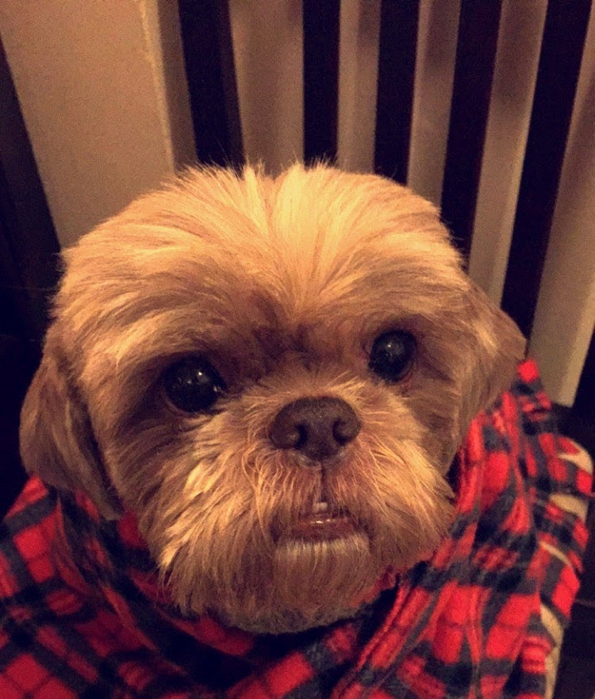
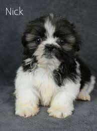

Hi, my name is Shina Cortez and I am a 17 year old student/soccer player from Los Angeles, CA. Recently in March, I participated in the LA Marathon. Although I hate running, I really enjoyed the positivity people brought. I will be a senior at Hamilton High School, and I am looking forward to applying to colleges. I live at home with my mom, my brother, my step dad, and my dog Browny.
I love art, video games, big dog lover, music and being around those I love/care about. I have an 11 year old Shih Ztu named Browny. My instagram!

Shih Ztu
Cool Facts:
-The breed is more than 1,000 years old
-They came from Tibet but were mostly bred in China
-From ancient times, the main job of the breed was to guard palaces and monasteries in ancient China
-They served as foot warms, hand warmers, lap warmers and bed companions
-Their names mean "Little Lion"
-Shih Tzu are called “chrysanthemum-faced dogs” because the hair on their faces grows in every direction
-They were wiped out during the Communist Revolution
-Because their numbers dwindled down to almost nothing during the first half of the 20th century, every Shih Tzu alive today can be traced to one of 14 dogs that were used to rebuild the breed.
-Military personnel brought them to the U.S
Pictures of pups:

Caring for Shih Ztus:
Unlike other dog fur, Shih Ztus coats are comprised with hair.
This means that their coats must be brushed daily to prevent any uncomfortable knots and matting.
With this breed, frequent vet visits are even more important because they are prove to a variety
of unique health issues.This includes hip dysplasia, Von Willebrand disease, and Autoimmune Haemolytic
Anaemia. It is best to not let Shih Tzus or any other dog jumo off of furniture Shih Tzus are also known
for eye problems, but this usually occurs in their senoir years.